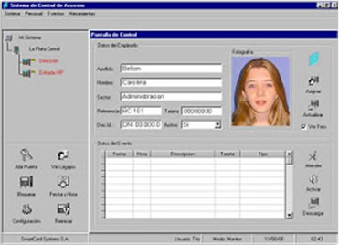

Se trata de un módulo muy ágil y completo, que le garantizará la tranquilidad de contar con completo control y registro de visitantes, sin por ello perder eficiencia ni rapidez para el ingreso a sus instalaciones.
El módulo es parametrizable de modo de ajustarlo al control de ingreso de visitas a Empresas o Barrios Cerrados, ya que hay ligeras diferencias en la información importante para uno u otro caso.
Paralelamente, Krandt Visitas es un desarrollo diseñado de manera de no entorpecer ni demorar la registración de esta información, permitiendo así que la instancia de registro no sea tediosa para sus visitantes sino un trámite que casi le pase desapercibido.

En el sistema se contempla e identifica el tipo de autorización de ingreso de acuerdo a si la persona que va a ingresar a sus instalaciones es una Visita o un Contratista.
En el caso de Contratistas el sistema cuenta con tablas específicas en las
cuáles se mantiene y controla información muy importante para garantizar
que el contratista efectivamente esté en condiciones de ingresar:
• Fecha de vencimiento de seguro del automóvil (en caso de contratistas
que ingresan con vehículos)
• Fecha de vencimiento del registro del conductor (en caso de contratistas
que ingresen con vehículos)
• Fecha de vencimiento de la ART del contratista
En el caso de ingreso a Empresas, en la recepción se le entregará al visitante una tarjeta temporaria, con la que podrá fichar en los molinetes de la recepción.
En caso de Barrios Cerrados se activará la apertura de la barrera en caso que
esté ingresando con vehículo siguiendo con el caso de ingreso a Empresas en
cuyo caso se le entregó una tarjeta temporaria para ingresar, el egreso de la
visita, podrá implementarse de dos modos diferentes, dependiendo de las
políticas de seguridad que quiera implementar su Empresa:
• Simplemente ingresando la tarjeta en el buzón del molinete de salida
• Fichando en el molinete que no tendrá un repositorio de tarjetas, y entregando
la misma en el mostrador de recepción. Este caso es necesario en caso que
las políticas de su Empresa requieran retener el documento del visitante o
registrar equipamiento con el que haya ingresado.
• Visitas aún dentro de las instalaciones
• Vistas del día
• Visitas recibidas por cada Empleado / Sector
• Horarios de entrada / salida de cada visita
• Información básica de la visita
• Identificación y localización del visitado:
- Empleado en el caso del ingreso a Empresas
- Lote / Propietario en el caso de Barrios Cerrados
• Registro de objetos que ingrese o retire
• Digitalización de su documento e imagen del visitante
• Entrega de una tarjeta temporal para pasar los molinetes
• Registro almacenado del horario de ingreso y egreso
• Reportes de:
- Visitas aún dentro de las instalaciones
- Vistas del día
- Visitas recibidas por cada Empleado / Sector
Al llegar a la recepción o vigilancia de su establecimiento, mediante diferentes criterios de búsqueda, se identificará si el visitante está pre-autorizado o bien si ha ingresado con anterioridad de modo de agilizar el ingreso de sus datos personales.
Esta búsqueda previa podrá realizarse por:
• Número de documento
• Apellido/Nombre
• Patente del vehículo
• Si existiera una pre-autorización (se explica en otro apartado)
Luego se registrarán entre otros datos:
• Nombre de la visita
• Número de documento, guardando una imagen digitalizada del mismo
• Empleado o Lote a Visitar
• Imagen digitalizada del visitante Al identificar el empleado o sector a
visitar, el sistema le indicará al operador, los números de contacto del
Empleado o Lote.
La información de estos datos personales de las visitas, serán mantenidas en la base de datos por tiempos configurables, de modo de agilizar el ingreso de la visita en caso que sea recurrente.
El sistema cuenta con un módulo Web que permite a sus Empleados o Propietarios, prever y pre-autorizar las visitas que vaya a recibir en las próximas horas/días.
Esto agilizará el ingreso por la recepción, ya que los datos del visitante estarán registrados y el operador no necesitará contactar al Empleado visitado para validar la autorización de ingreso.
Permite diferentes modalidades de pre-autorización, siempre buscando agilizar
el trámite de ingreso de la visita, sin por eso perder seguridad en el control de
acceso: El módulo Web permite pre-autorizar:
• Para un día puntual
• Para un rango de días
• Permanente: muy utilizado en Barrios Cerrados para autorizar familiares
• Free Pass (solo para configuración de Barrios Cerrados): para aquellos casos
que el Propietario realice eventos y prevea recibir muchas visitas concentradas
en un día.
Toda persona pre-autorizada queda fácilmente identificable en el puesto de control de accesos de modo de agilizar la autorización y evitar el ingreso de los datos personales en el momento que el visitante llega, ya que esos datos fueron previamente ingresados por la persona Visitada.
El sistema permite registrar equipamiento que el visitante ingrese, como así también objetos que retire con su respectivo documento de remito.
La identificación de los objetos podrá realizarse ingresando en forma manual el número de serie del mismo o bien mediante un scanner que permita leer el código de barras de dicho número de serie.